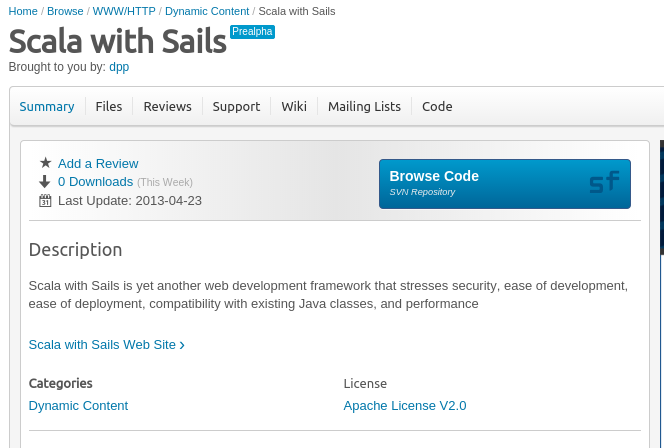
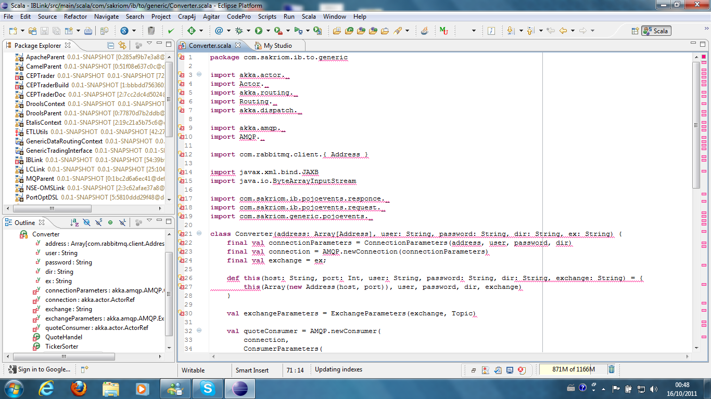
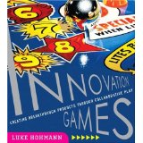
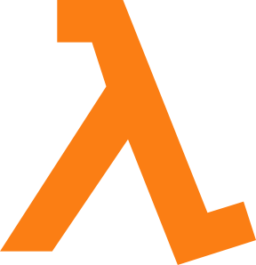
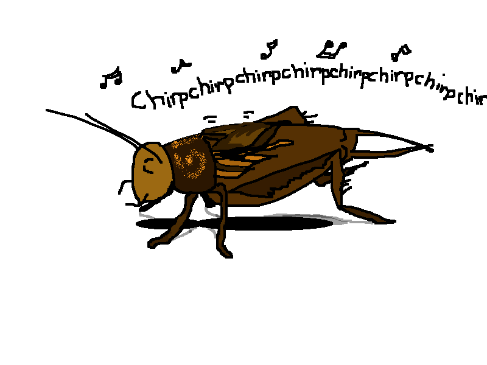

Lift
An 8 Year Retrospective
Scala eXchange 2014
David Pollak / @dpp
Thanks to the Lift Committers:
Burak Emir -
Diego Medina -
Peter Petersson -
David Bernard -
Kris Nuttycombe -
Matt Farmer -
Maciek Starzyk -
Philipp Schmidt -
David Pollak -
Alex Boisvert -
Debby Meredith -
Stepan Koltsov -
Alex Payne -
Marius Danciu -
Indrajit Raychaudhuri -
Lee Mighdoll -
Andreas Joseph Krogh -
Ross Mellgren -
Vassil Dichev -
Antonio Salazar Cardozo -
Carsten -
Joe Barnes -
Dave Whittaker -
Ján Raška -
Jonas Bonér -
Eric Torreborre -
Jonathan Hoffman -
Julien Wetterwald -
Franz Bettag -
Viktor Klang -
Daniel Green -
Jorge Ortiz -
Torsten Uhlmann -
Steve Jenson -
Mads Hartmann Jensen -
Timothy Perrett -
Francois Bertrand -
Tyler Weir -
Reuben Doetsch -
Derek Chen-Becker -
Jeppe Nejsum Madsen -
Chris Wilkes -
Harry Heymann -
Heiko Seeberger -
Al Thompson
A Word from a Lift supporter
If you want to use this stuff to make the world function better (pun
intended) and do so in a great team, email: paul.dale@elemica.com
Elemica employs more Lift committers than anyone else
About @dpp
- Founded Lift web framework
- Wrote a bunch of commercial spreadsheets
- Crazy passionate lawyer-trained tech dude
- The Lift codebase is more than 8 years old
- Top 3% of team size, commits, velocity, age
- More than a software project: Volunteer effort
'Hello, Joe' & Rubyconf 2006
Mocking another language turned me off.
As did disdain for types and "Enterprisey" things.
Googled "Functional language, jvm"
Found Scala
- Best of Ruby and Java
- Java interop "Just Worked"™
- Seemed like the best thing EVER!!

Scala 2.2 days
- Very small community (wiki included most members)
- Friendly, mostly academic
- Jon Pretty: the commercial user
Me: Mostly Web Dev
- Had done a couple of (proprietary) web frameworks
- Spring (the hotness at the time) sucked
- So, I decided to do my own web framework... for Scala
Pre-Lift: Scala with Sails

- ORM and some Rails-like controller stuff... and Textile
- Dec 7, 2006 - Feb 2007
- Lift name from Roger Rohrbach from Gabble. Runner up: Escalate
Feeding Bears

- Title going back 20+ years
- John Irving: Hotel New Hampshire, etc.
- Balancing community, customers, partners, etc.
Used Lift for photo-sharing dropbox thingie
- Focused on REST
- Some support for Actors and Comet
- Tool-chain challenge

Tim O'Reilly, May 4, 2007
Not to be left out in the “doing cool things on the web”, is a fairly
new framework for Scala (another highly functional language with some similar features to Erlang and Smalltalk) called lift. There’s an interesting post by the author showing a twittr clone he claims can scale to
handle twittr’s traffic with only 2 machines thanks to message
persistence with the Actor based model.
lift stresses security, developer productivity, ease of deployment, ease of maintainability, performance, and compatibility with existing systems.
Lift's description, today
- Lift applications are:
- Secure
- Developer centric
- Designer friendly
- Scalable
- Modular
- Interactive like a desktop app
Early Stuff
- Steve Jenson, Alex Boisvert, and I lived a few blocks from each other
- I vowed never to do a release ... only broke vow once
- David Bernard (another twin dad) set up the build process, system, and infrastructure
Innovation Games
- Luke Hohmann wrote about serious games to play with business folks
- Hired me to put browser-based multi-player games online
- Forcing function for Lift's Comet... in IE 6
Stuff at SAP
- Innovation Games played at SAP
- Needed to integrate with some of SAP's systems
- Tried (and failed) to excite SAP about Scala
Scala-tools.org & Scala-blogs.org
- One day at SAP, IMed with David Bernard
- He suggested an official Maven repo -- thus Scala-tools.org
- And a shared Scala Blog: Scala-blogs.org... hosted at Blogger as an homage to @stevej
Bay FP
- Was sole Scala rep at first meeting
- All the functional web framework folk in one place
Ev's Thing
- Ev Williams incubated Twitter and a bunch of other stuff out of a south park office
- Had an idea and asked Steve Jenson to do a prototype
- Steve asked me to help him do it in Lift... got to visit the Twitter offices and get to know Twitter engineers
Silicon Valley Code Camp
- Presented Scala and Lift over years
- Met Java Posse and Bill Venners
- Eishay Smith from LinkedIn... convinced switch from Groovy to Scala
- Invited to me help out with issues
- Martin and I did full frontal assault to get Twitter to adopt Scala
- For a while, Lift ran the public timeline service
Scala Lift Off
- First in SF 2008... tipping point for Scala @ Twitter
- Held 5 events over 3 years in SF and London
- Open Space conference oriented to community sharing
ESME
- Behind the firewall, corporate Twitter-style communication thingie
- James Governor hooked me up with Richard Hirsch, Darren Hague and others in the SAP ecosystem... and Vassil Dichev joined the merry bunch.
- Demoed Lift-powered ESME to 6,000 SAP developers in Nov 2008
- First Scala-based Apache project in 2009
JavaOne 2009
- 50% attendance drop vs. 2008
- Lots of Scala and Lift presentations
- Scala and Lift books (3 total) all in top 10 at bookstore sales
AMPLab Scala Preso
- "We are teaching a class on highly productive parallel programming languages tu/th 2:30-4 and would love to have a talk on scala.
Are you possibly interested and avaialble?
More about the class can be found at http://parlang.pbwiki.com" - Spent an afternoon discussing Ruby vs. Scala and distributing JVM bytecode to a cluster
- This group went on to build Spark
Lift Firsts
Maven & CI
- Thanks to Chris Wilkes, Lift was the first Scala project to use Maven
- Lift had its own repo... but was soon shared with the community as scala-tools.org
- Thanks to Indrajit and Derek, Lift had a cross-Scala-version build system
- Had the first Jenkins system and code review system in Scala-land
Git & GitHub
- Lift initially hosted at Google Code
- 2008: got taken to lunch by the Octocats
- Git changed the way the community discussed features
Code of Conduct
- Informal in the beginning
- Codified in 2011
- Led to a really excellent community
DOM Templating
- Templating via DOM re-write rather than String vomit
- More secure
- Liberally borrowed CSS Selector Transforms from Enlive
- Heisted by certain eponymous Haskell projects
- DOM writing the hotness in JS frameworks, eg ReactJS
Misc Tech Stuffs
- Futures in Scala... and fast fail on collection of Futures
- Parallel and lazy page render
- Non-core-library Actors in Scala
- Automatic Async support (including by return type)
Lift going forward
Lift 3 is alive
- Breaking changes to fix cruft... much of the cruft 8 year legacy of @dpp
- Streaming promises, Futures everywhere, Single Page Apps
- Curated by Antonio, Matt, and Diego
Community
- Continues to be strong and warm
- Linear participant growth, flat question frequency
- New committers (Hi Joe) continue to add new energy
A Decade of Lift?
- Yes!
- Will Lift have a massive growth spike? No.
- Likely to be Eiffel-like...